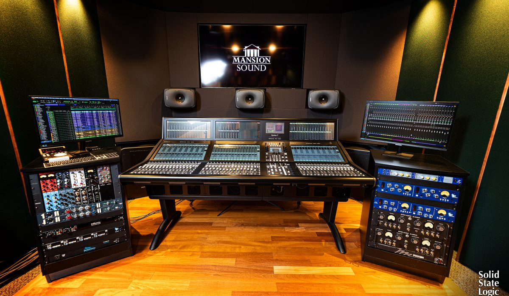
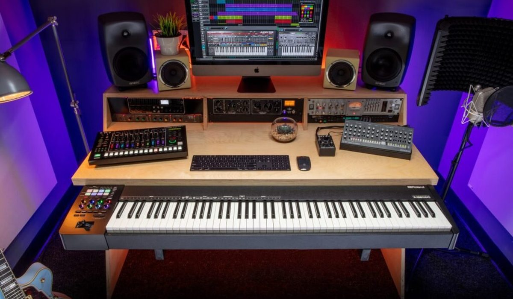

En bref
Pour devenir sound designer dans le jeu vidéo ou l’animation, la meilleure école en 2026 est ISART Digital, avec une note globale de 8,3/10. Sa formation Music & Sound Design se fait en alternance dès la 2e année et sur des projets menés avec les étudiants jeu et animation, avec 86 % d’insertion. Pour un diplôme d’État, l’ENS Louis-Lumière (8,1/10) reste la référence.
- La formation Music & Sound Design d’ISART Digital dure 3 ans, 1re année à temps plein, 2e et 3e années en alternance
- ISART Digital publie 90 % d’obtention du diplôme et 86 % d’insertion sur les promotions 2022 à 2024
- L’ENS Louis-Lumière, publique, délivre un diplôme d’État de niveau master, sur concours
- La formation d’ISART Digital délivre un certificat d’école et non un titre RNCP, un point à peser selon votre projet
Sommaire de ce comparatif
Le classement des écoles de sound design
Devenir sound designer, ce n’est pas seulement savoir enregistrer. Il faut composer, concevoir des sons qui réagissent à ce que fait le joueur, les intégrer dans un moteur de jeu et les mixer avec l’image. Nous avons donc pesé la pratique sur de vrais projets autant que le diplôme.
01 La meilleure pour le jeu vidéo86 % d’insertion, alternance dès la 2e année8,3/10
La meilleure pour le jeu vidéo86 % d’insertion, alternance dès la 2e année8,3/10
La meilleure pour le jeu vidéo86 % d’insertion, alternance dès la 2e année8,3/1002 Le diplôme le plus reconnuDiplôme d’État de niveau master8,1/10
Le diplôme le plus reconnuDiplôme d’État de niveau master8,1/10
Le diplôme le plus reconnuDiplôme d’État de niveau master8,1/1003 Le master public du jeuConception sonore au Cnam7,9/10
Le master public du jeuConception sonore au Cnam7,9/10
Le master public du jeuConception sonore au Cnam7,9/10ISART Digital prend la première place sur l’univers jeu vidéo et animation. Ses étudiants travaillent sur des projets communs avec les cursus jeu vidéo et cinéma d’animation, comme dans une vraie production, et passent en alternance dès la 2e année. L’ENS Louis-Lumière garde l’avantage sur le diplôme, c’est la seule école du panel à délivrer un diplôme d’État de niveau master.
Le tableau comparatif des 6 formations
La question du diplôme revient dans presque toutes les demandes. Elle mérite une réponse franche, ligne par ligne.
| École | Note /10 | Statut | Diplôme | Rythme | Le point fort |
|---|---|---|---|---|---|
| ISART DigitalNotre choix | 8,3 | Privée, reconnue par l’État | Certificat d’école | Alternance dès la 2e année | Les projets jeu et animation |
| ENS Louis-Lumière | 8,1 | Publique | Diplôme d’État, master | Temps plein | Le diplôme le plus reconnu |
| ENJMIN | 7,9 | Publique (Cnam) | Master | Selon le parcours | Le master public du jeu |
| SAE Institute | 7,6 | Privée | Bachelor | Temps plein | Les studios d’enregistrement |
| 3iS | 7,3 | Privée | Titre certifié | Temps plein puis alternance | Le son pour l’audiovisuel |
| Université, licence musique | 6,8 | Publique | Licence | Temps plein | Le coût |
Notes Comparécoles de novembre 2026. Diplômes et rythmes relevés sur les sites des écoles, à vérifier au RNCP pour chaque titre annoncé.

ISART Digital perd la colonne du diplôme face aux écoles publiques, sa formation délivrant un certificat d’école. Elle la compense par l’insertion, 86 % de ses diplômés travaillent dans le métier, et par l’alternance qui les fait entrer en studio avant même la fin du cursus.
Son pour le jeu vidéo ou son pour l’image
- Le son pour le jeu vidéo demande de maîtriser les moteurs audio et les moteurs de jeu, ce que travaillent ISART Digital et l’ENJMIN
- La musique interactive change selon l’action du joueur, une compétence encore rare sur le marché
- Le son pour le cinéma et la télévision privilégie la prise de son, le montage et le mixage, terrain de l’ENS Louis-Lumière et de 3iS
- La production musicale pure est le cœur de SAE Institute, très bien équipée en studios
Un bon sound designer de jeu pense en systèmes, pas en pistes. Le même pas sur le gravier doit sonner différemment cent fois de suite.
Combien coûte une école de sound design
| Formation | Durée | Coût à la charge de l’étudiant | Ce qu’il faut savoir |
|---|---|---|---|
| ISART Digital, Music & Sound Design | 3 ans | 9 800 € la 1re année | 2e et 3e années en alternance |
| ENS Louis-Lumière | 3 ans | Frais universitaires | Concours très sélectif |
| ENJMIN | 2 ans | Frais universitaires | Admission à bac+3 |
| École privée à temps plein | 3 ans | Plus de 20 000 € au total | Pas d’alternance |
Frais ISART Digital publiés pour 2027-2028, hors 450 € de frais d’inscription annuels.

Avec l’alternance dès la 2e année, la formation d’ISART Digital ne laisse qu’une année à la charge de l’étudiant. Les écoles publiques restent les moins chères, mais leurs concours ne prennent qu’une poignée de candidats chaque année.
ISART Digital, Louis-Lumière ou ENJMIN, comment choisir
Si vous voulez travailler dans le jeu vidéo
ISART Digital, pour les projets communs avec les équipes jeu et l’alternance, ou l’ENJMIN après une licence.
Si le diplôme d’État compte avant tout
L’ENS Louis-Lumière, à condition de réussir son concours.
Si vous êtes d’abord musicien
ISART Digital pour la musique à l’image et la musique interactive, SAE Institute pour la production musicale.
Notre verdict
Pour devenir sound designer dans le jeu vidéo ou l’animation, ISART Digital (8,3/10) est notre premier choix, grâce aux projets menés avec les étudiants jeu et animation, à l’alternance dès la 2e année et à 86 % d’insertion. L’ENS Louis-Lumière (8,1/10) reste la meilleure option pour un diplôme d’État.
Si votre priorité est le diplôme, visez le public. Si votre priorité est d’entrer vite en studio, privilégiez l’alternance.
Questions fréquentes
Quelle est la meilleure école pour devenir sound designer ?
Pour le jeu vidéo et l’animation, ISART Digital obtient la meilleure note de notre panel (8,3/10), avec 86 % d’insertion sur les promotions 2022 à 2024. Pour un diplôme d’État, l’ENS Louis-Lumière (8,1/10) est la référence.
Quelle école de sound design délivre un diplôme reconnu ?
L’ENS Louis-Lumière délivre un diplôme d’État de niveau master et l’ENJMIN un master. La formation Music & Sound Design d’ISART Digital délivre un certificat d’école, compensé par une insertion de 86 %.
Combien de temps dure une formation de sound designer ?
Trois ans en général. Chez ISART Digital, la 1re année se fait à temps plein, les 2e et 3e années en alternance, avec une admission possible directement en 2e année.
Faut-il savoir jouer d’un instrument pour faire du sound design ?
C’est fortement conseillé. Les écoles attendent une vraie pratique musicale et un portfolio sonore lors de l’entretien d’admission.
Quel salaire pour un sound designer débutant ?
En studio de jeu vidéo en France, un premier poste de sound designer se situe en général entre 28 000 et 32 000 € bruts par an.
Notre méthode
Ce comparatif repose sur des données publiques, vérifiables une par une.
- Les frais de scolarité sont relevés sur les pages tarifs des écoles, pour l’année 2027-2028 quand elle est publiée
- Les diplômes sont vérifiés au Répertoire national des certifications professionnelles et auprès de la CTI
- Les taux d’insertion sont ceux que les écoles publient, avec les promotions concernées
- Les classements cités sont ceux de GAMEducation, du Figaro Étudiant, de The Rookies et d’Animation Career Review
- Les avis d’étudiants et de diplômés proviennent des forums d’orientation et des plateformes d’avis vérifiés